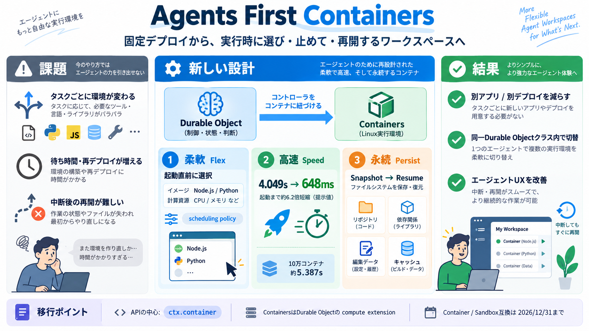

Cloudflare Containers, rebuilt to scale agent sandboxes
speeds up startup: an independent ComputeSDK benchmark shows median time-to-interactive dropping from 4.049 seconds to 6…

固定デプロイの発想から、実行時に環境を選び、スナップショットで“止めて・再開する”コンテナへ。
AIエージェントの作業環境（ワークスペース）は、開始時にツール・言語・規模が変わり、短時間で停止し、場合によっては後で再開が必要。
従来の“デプロイ時に固定されたコンテナ”だと、環境差分ごとに分岐・待ち時間・再デプロイが増えやすい。
各コンテナに専用の Durable Object を置き、ライフサイクル管理・状態管理・外部通信制御を行うことで、エージェント向けに“制御可能なワークスペース”を作る。
これまでの「どのイメージ／どれだけの計算リソース」をデプロイで決めるのではなく、実行時コード（Durable Object）で選べるようにする。
Durable Objectの実行時コードから、コンテナ開始時にイメージ（Node.js / Python等）やインスタンスタイプを指定してスケジューリングと初期化を判断。
ComputeSDKの独立ベンチマークで、メディアンは 約4.049秒 → 648ミリ秒（6.2倍速）、バーストでは 10万コンテナを約5.387秒 で起動できたと提示。
スケジューリングの準備で待つ部分を減らし、Durable Object近傍でキャパシティ探索を優先。さらにホストの準備済みイメージ／スナップショットを活用してVM再割り当て処理を短縮する。
ファイルシステムのスナップショットをパブリックベータで提供し、作業状態を保存して後で同じ環境へ復元できるようにする。
従来は環境差分ごとに別アプリ・別Namespace・別デプロイになりがちだったが、新方式は同一Durable Objectクラス内でタスクごとに切替。
開発者体験としてDurable Objectを明示し、 ctx.container API を中心に移行を促す（ネイティブ機能はこの経由のみ）。
Container クラスとレガシー Sandbox クラスは 2026/12/31 まで維持。新機能はネイティブのみで、Sandbox SDK 1.0は基底クラスではなくユーティリティとして提供。
実行時に環境を選べる（scheduling policy）、起動を高速化、さらにスナップショットで再開可能にすることで、エージェントのUX課題を直接狙う。
仕様詳細・API・制限・ベンチ条件は、必ずCloudflareの公式ドキュメントとブログで最新を確認。
speeds up startup: an independent ComputeSDK benchmark shows median time-to-interactive dropping from 4.049 seconds to 6…
New capabilities are native-only. The `durable_object` scheduling policy, faster startup, runtime image and instance sel…
name = "agent-computer"name = "agent-computer"main = "src/index.ts"main = "src/index.ts"compatibility_date = "2026-09-29…
On March 24, 2026, Cloudflare launched Dynamic Workers in open beta, using V8 isolates instead of Linux containers to sa…
Cloudflare, Inc. (NYSE: NET) is the leading connectivity cloud company on a mission to help build a better Internet. It …